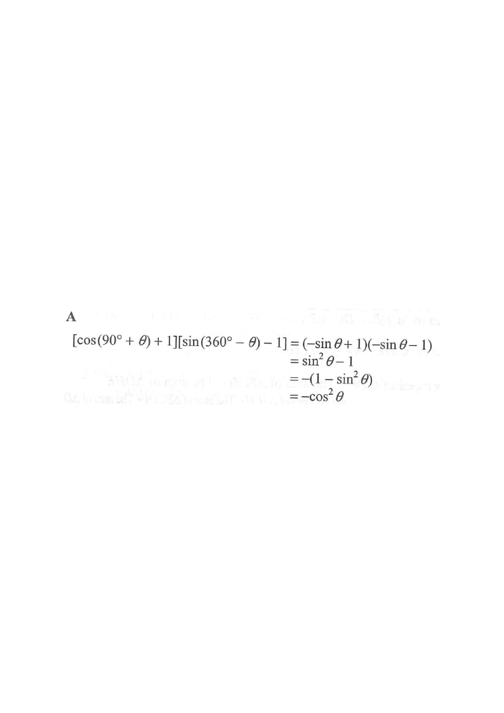

For any angle $\theta$, the CAST / allied-angle rules give:
$$\cos(90^\circ+\theta) = -\sin\theta$$
$$\sin(360^\circ-\theta) = -\sin\theta$$
Replace each factor:
$$\big(\cos(90^\circ+\theta)+1\big)\big(\sin(360^\circ-\theta)-1\big)$$
$$= (-\sin\theta+1)(-\sin\theta-1)$$
This is a difference of squares pattern $(a+b)(a-b)=a^2-b^2$ with $a=-\sin\theta$, $b=1$:
$$(-\!\sin\theta+1)(-\!\sin\theta-1)=(-\!\sin\theta)^2-1^2$$
$$= \sin^2\theta-1$$
The identity $\sin^2\theta+\cos^2\theta=1$ gives $\sin^2\theta-1=-\cos^2\theta$:
$$= -(1-\sin^2\theta) = -\cos^2\theta$$
The expression simplifies to $\;-\cos^2\theta$.